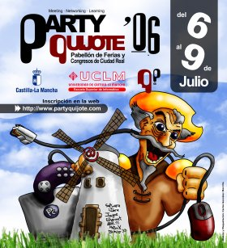
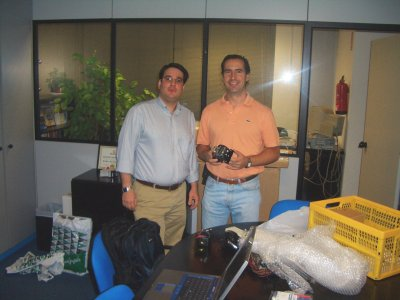
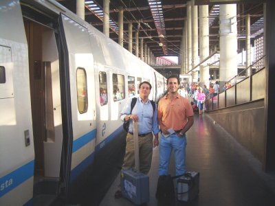
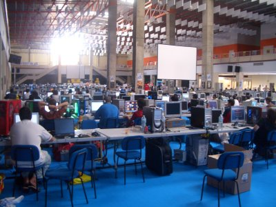
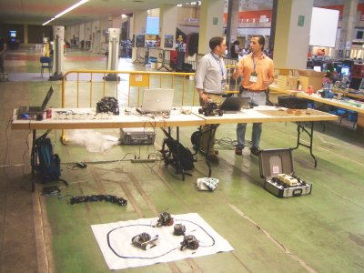
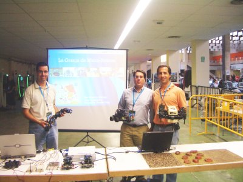
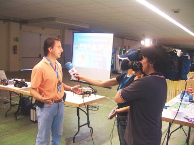

This work is licensed
under a Creative
Commons Attribution-ShareAlike 2.5 Spain License
This work is licensed
under a Creative
Commons Attribution-ShareAlike 2.5 Spain License
|
"Granja de Micro-Robots”. Party-Quijote. Ciudad Real. Julio 2006 |
|
 |
Título: “Granja de Micro-Robots”
Duración: 50 minutos de conferencia-show + 1h de demostraciones, donde la gente viene y ve los robots de cerca
Evento: Party-Quijote'06.
Organización de la party: Junta de Castilla-La Mancha y la Escuela Superior de Informática de la Universidad de Castilla-La Mancha. UCLM
Organización de la conferencia-show: Esta charla es parte de las actividades organizadas por Quark Robotics
Lugar: Pabellón de ferias y congresos de Ciudad Real.
Fecha: 8 de Julio de 2006
Ponentes:
Robots enseñados: Skybot, Clónico, Mark III, PuchoBot, Melanie III, Cube Revolutions, Hypercube y Yoshua.
Inicialmente, la conferencia iba a ser dada por Andrés Prieto-Moreno, Alejandro Alonso Puig y Juan González. Pero en la semana previa, la mujer de Andrés dió a luz a un precioso niño. Ricardo Gómez, muy amablemente, se ofreció a ocupar su puesto. Muchas gracias ;-). Él conocía perfectamente los robots porque los había estado mostrando en la presentación de ARDE.
El objetivo de esta charla-show es despertar el interés por la robótica entre los asistentes y hacerles ver que es un mundo divertido, apasionante y sencillo. Cualquiera puede construir su primer robot. Sólo se necesitan ganas. Para ello se comienza mostrando el robot más sencillo, el “hola mundo” de la robótica. Se llama Skybot y es el que utilizamos en nuestros talleres de iniciación. Es un robot abierto. Toda la información está disponible bajo una licencia libre: planos, electrónica y software. Se continúa con el Clonico, un versión del Skybot con una estructura mecánica mejorada y propulsión por orugas en vez de ruedas. También se muestra el Mark III, un ejemplo de robot comercial no libre, que tiene una estructura muy compacta.
A continuación nos centramos en los robots articulados, que tienen una mecánica un poco más compleja y en los que aparece el problema de la coordinación. ¿Cómo coordinar las diferentes articulaciones para conseguir que el robot se mueva?. Como primer ejemplo se muestra a PuchoBot, un robot cuadrúpedo que tiene 12 articulaciones, y que puede moverse de manera autónoma o controlado a través del PC. El siguiente es Melanie III, un robot hexápodo de tres grados de libertado por pata y más de 30 sensores. La coordinación de las articulaciones se resuelve mediante programación gestual o generación de trayectorias a partir de ondas.
En la siguiente parte se habla sobre una nueva tendencia surgida en 1994: La robótica modular. Son robots construidos por la unión de módulos. Se muestran los módulos Y1 y cómo con ellos se han realizado dos configuraciones diferentes. Una es el robot “gusano” Cube Revolutions, formado por 8 módulos Y1 conectados con la misma orientación. Este robot sólo se puede mover en una dimensión. La otra configuración es Hypercube, también formada por 8 módulos pero con diferentes orientaciones. El resultado es que se puede mover en 2D, como una serpiente.
Finalmente, se hace una demostración del robot de exploración Joshua. Se telecontrola desde el PC y dispone de una cámara inalámbrica que envía las imágenes al operador. Manejarlo es como jugar al doom pero en directo ;-)
|
|
|
Transparencias de la presentación |
|
Presentación en PDF |
|
|
Presentación para OpenOffice 2.0 |
Robot “hola mundo” Skybot
Robot Cuadrúpedo PuchoBot
Robot Hexápodo Melanie III
Información sobre los módulos Y1
Robot Mark III
Robot ápodo Cube Revolutions
A las 7 de la mañana del sábado 8 de Julio, habíamos quedado Alejandro, Ricardo y Juan González en Ifara Tecnologías para embalar todos los robots y poner rumbo hacia la Party-Quijote. En la foto de la izquierda estan Ricardo y Alejandro haciendo los preparativos. Llegamos a la estacion de Atocha, desayunamos y nos subimos al AVE.
|
 |
 |
En menos de una hora ya estábamos en Ciudad Real. Tomamos un taxi hasta el pabellón de ferias y congresos donde se celebraba la party. El ambiente era espectacular (foto de la izquierda). Nos dirigimos a la zona donde haríamos la charla-show y empezamos a hacer el despliegue de los robots. En la foto de la derecha están Ricardo y Alejandro hablando. Se pueden ver las dos mesas con los tres portátiles, Cube Revolutions y PuchoBot en la parte de la izquierda, Joshua delante de Ricardo, Melanie III todavía metida en su maletín, delante de Alejandro, Hypercube en el suelo y una superficie blanca donde hay dos Skybot, el clónico y el Mark III.
|
 |
 |
Y aquí estamos los tres mosqueteros antes del combate (foto de la izquierda). Alejandro con Melanie III, Ricardo con Joshua y yo con Hypercube. La party-Quijote fue el primer evento en el que se ha mostrado Hypercube. Lo desarrollé en Alemania, durante mi estancia en Hamburgo. En la foto de la derecha, Alejandro está siendo entrevistado en la televisión.
|
 |
 |
|
|